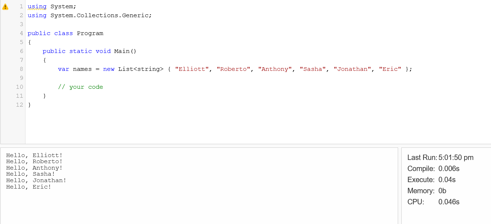
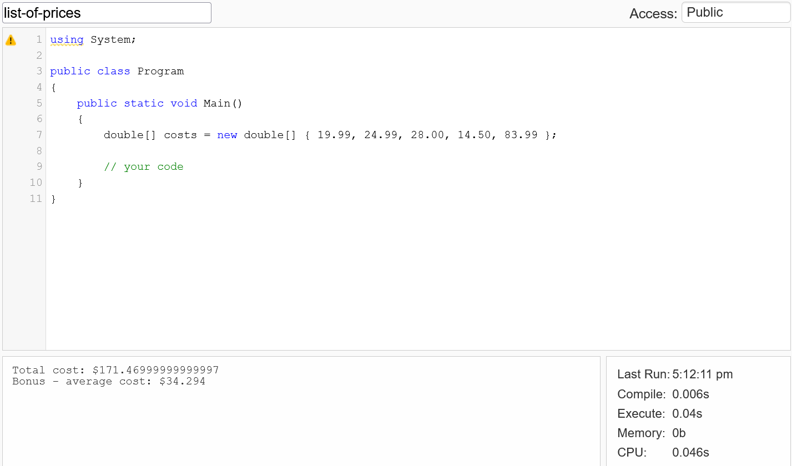
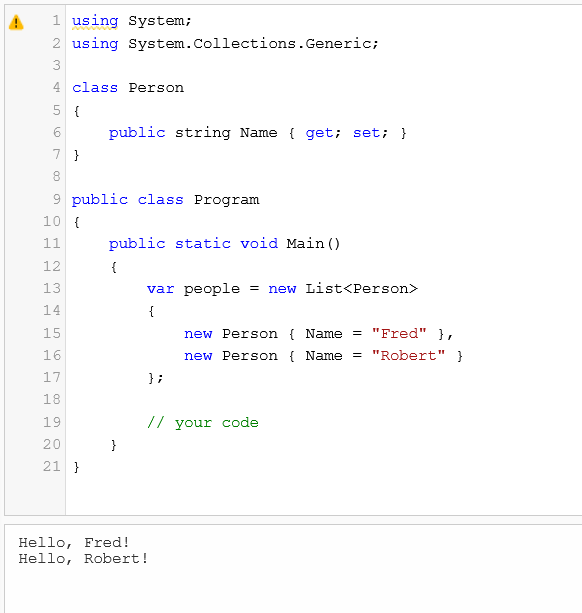
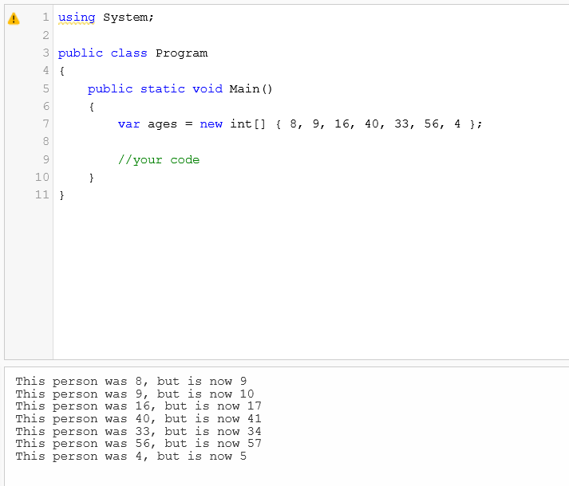

Loops are very common in programming because lists are common, and by "list", I mean List<T>, Array, and string (which, if you think about it, is a list of characters). When you have list-like things, more often than not you loop through them, or in other programming terms, you "iterate over them" or "enumerate them". In C#, the thing that makes things "listy" is that they implement the IEnumerable interface. List<T>, Array, and string all implement IEnumerable.
Using loops and doing loop-like things to process lists needs to practiced so it can become so easy that it's boring. And so here's some exercises to do. I'll be giving them to you using .NET Fiddle. You can try to complete them there, copy the starter code into Visual Studio, or mix it up.
You get a list of names. Can you output a greeting?
https://dotnetfiddle.net/d8SOD4#
You just bought some books and you have their prices in an array. What's the total amount you spent? Bonus: what's the average cost of each book?
https://dotnetfiddle.net/ZqBhAs
Like before, say hello to these folks...but this time we're using a class!
We have an array of people's ages, but everyone just had a birthday! Write some code to figure out how old they are now and let us know! Bonus: what's the total age of all these people before the birthday and after.
